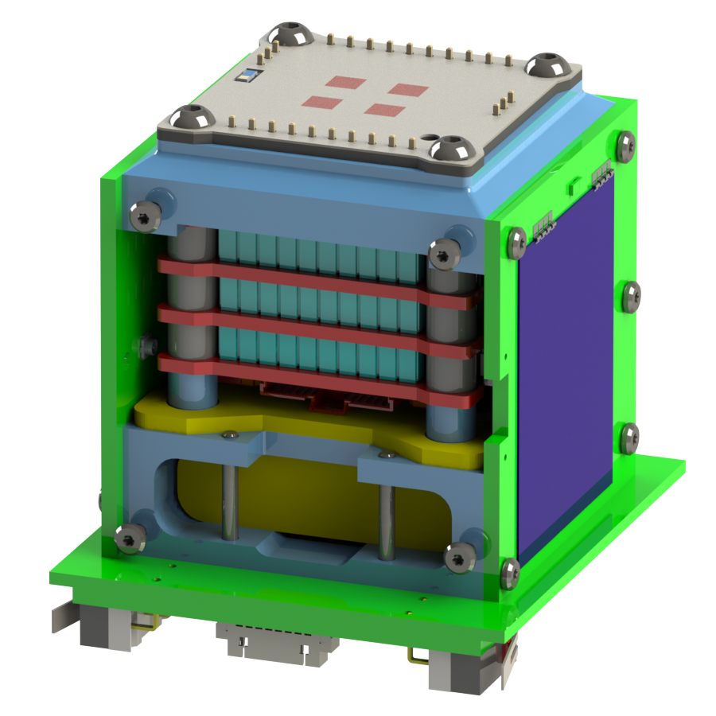
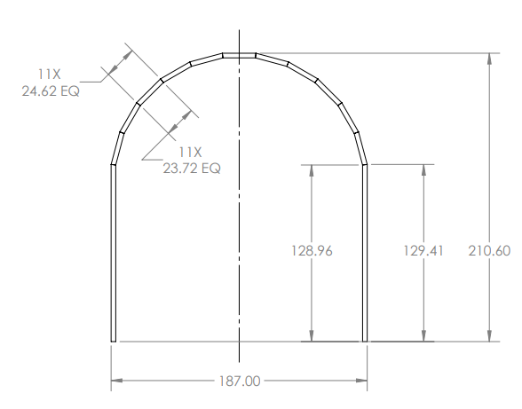

PoCAT-Lektron Mission (ESA FYS! 4)
3-axis detumbling system using hysteresis rods, later upgraded to active magnetorquer torque control with H-bridge actuation. MATLAB simulations of attitude dynamics, detumbling performance and nadir-pointing control.

ADCS Simulation with Helmholtz Coils — UPC INIREC
Real-time MATLAB simulation and control app for orbital experiments using Helmholtz coils. Camera-based angular rate estimation for motion tracking in simulated orbital conditions.

Illumination System for Solar Simulation
Hardware illumination system designed to replicate solar lighting conditions for simulated orbital environments. Developed at the UPC NanoSat Lab with rigorous documentation of all code and experimental procedures.

Aerospace Engineering — Major in Air Navigation
Dual bachelor's program in Aerospace Systems and Telecommunications Systems Engineering at UPC BarcelonaTech. Specialization in orbital mechanics, aerodynamics, electromagnetism and embedded systems design applied to space platforms.